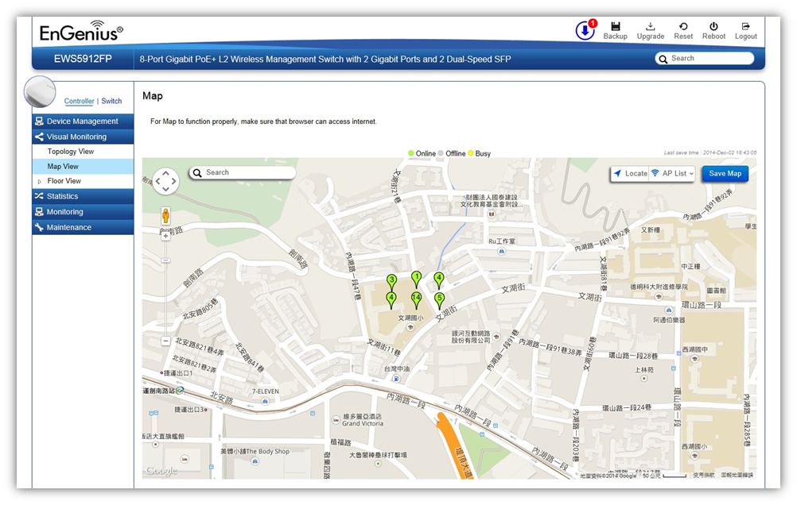

Visual Monitoring > Map View
From here, you can view a geographical representation of Access Points in the network. Click AP List to display the list of Access Points managed by the EWS switch then simply click-and-drag the AP marker to the desired location on the map.

Navigating Tips
Use  to scroll up, down, left, or right.
to scroll up, down, left, or right.
Use the slider bar to Zoom in/out. Alternatively, you can use the mouse to navigate by clicking and dragging the left mouse button. Use the mouse wheel to zoom in/out.
Use the Search box to search for locations by typing an address or the name of a landmark.
Use the Locate button to pinpoint the map to your current location.
Click on Save Map for the settings to take effect.
Created with the Personal Edition of HelpNDoc: Write EPub books for the iPad